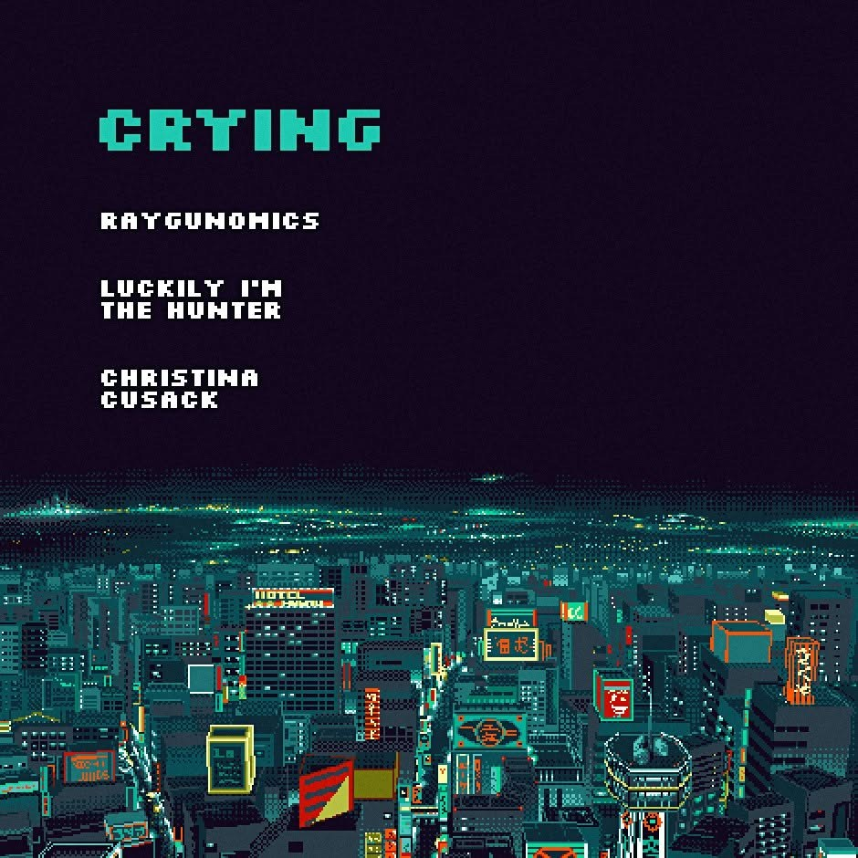

MON APR 25from the archive
Crying, Raygunomics, Luckily I'm The Hunter, Christina Cusack
Crying, Raygunomics, Luckily I'm The Hunter, Christina Cusack. Sluggo's, April 25.

Crying, Raygunomics, Luckily I'm The Hunter, Christina Cusack. Sluggo's, April 25.